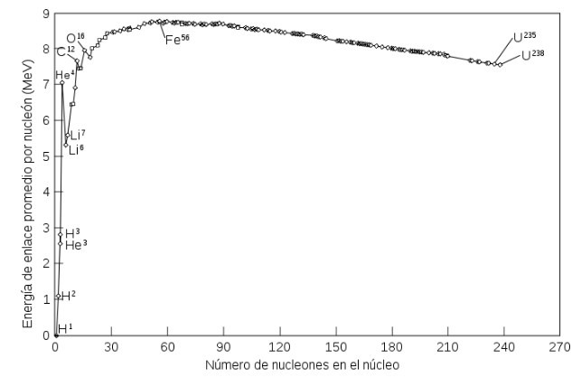

Estructura Nuclear
El modelo atómico
Una descripción simple de la estructura interna de un átomo lleva a distinguir dos zonas en él: núcleo y corteza.
El núcleo se encuentra en el centro del átomo; tiene un radio del orden de \(10^{-14}\,\text{m}\) a \(10^{-15}\,\text{m}\), es muy pequeño comparado con el radio del átomo (del orden de \(10^4\) a \(10^5\) veces más pequeño); en él se encuentran los protones, que poseen carga positiva, y los neutrones, que no poseen carga eléctrica; ambos tienen una masa parecida.
Alrededor del núcleo, y formando la zona externa del átomo, se encuentra la corteza, donde se localizan los electrones, con la misma carga eléctrica que el protón, pero de signo contrario, y con una masa mucho menor que la de protones o neutrones.
El radio de la corteza y, por tanto, del átomo, es del orden del Angstrom (\(1\,\text{Å}=10^{-10}\,\text{m}\)). Prácticamente, el átomo está vacío.
Se denomina número atómico \(Z\) al número de protones en el núcleo y número másico \(A\) a la suma de protones y neutrones que hay en el núcleo. Si \(N\) es el número de neutrones, se cumple:
\[ A = Z + N \]
La forma de representar el núcleo del átomo de un elemento es:
\[ {}^{A}_{Z}X \]
Donde \(X\) es el símbolo del elemento químico en cuestión.
Los átomos que tienen el mismo número atómico poseen las mismas propiedades químicas ya que tienen el mismo número de electrones en su corteza; por tanto, se trata de átomos de un mismo elemento químico.
Se llama isótopos a los átomos de un mismo elemento que tienen el mismo número atómico y distinto número másico. Los isótopos se nombran posponiendo el número másico al nombre del elemento químico (carbono-14, carbono-12).
Tanto a protones como a neutrones se los denomina indistintamente nucleones. Se denomina núclido a cada especie nuclear definida por su número atómico y su número másico.
Se define la unidad de masa atómica \(u\) como la doceava parte de la masa de un isótopo de carbono-12.
Interacciones fundamentales
En la naturaleza hay cuatro interacciones fundamentales de las que derivan todas las demás:
- Interacción gravitatoria.
- Interacción electromagnética.
- Interacción nuclear fuerte.
- Interacción nuclear débil.
La interacción electromagnética es la responsable de la interacción entre los electrones y los protones que se encuentran en un mismo átomo. También es la responsable de la interacción entre electrones de distintos átomos; por tanto, es la que interviene en la formación y en la destrucción de enlaces moleculares, es decir, es la interacción involucrada en las reacciones químicas.
La interacción nuclear fuerte es más intensa que la electromagnética pero tiene un alcance limitado, del orden del tamaño del núcleo atómico (\(10^{-15}\,\text{m}\)); a ella se debe que protones y neutrones permanezcan unidos en el núcleo del átomo.
La interacción nuclear débil es la responsable de la estabilidad interna de protones y neutrones; también es responsable de la emisión \(\beta\). Tiene un alcance aún menor que la interacción nuclear fuerte, del orden de \(10^{-17}\,\text{m}\).
Es menos intensa que la interacción nuclear fuerte y que la interacción electromagnética.
En el siguiente cuadro se comparan las intensidades relativas de las cuatro interacciones fundamentales para un protón:
| Interacción | Intensidad relativa | Alcance | Carácter |
|---|---|---|---|
| Gravitatoria | \(10^{-38}\) | Infinito | Atractivo |
| Electromagnética | \(10^{-2}\) | Infinito | Atractivo y repulsivo |
| Fuerte | \(1\) | \(10^{-15}\,\text{m}\) | Atractivo |
| Débil | \(10^{-5}\) | \(10^{-17}\,\text{m}\) | Atractivo |
Respecto al orden de magnitud de la energía que se pone en juego en procesos en los que intervienen estas fuerzas, es interesante comparar los correspondientes a las interacciones electromagnética y nuclear fuerte: mientras que la energía involucrada en las reacciones químicas y en las transiciones electrónicas entre niveles energéticos de un átomo (procesos en los que la interacción que interviene es la electromagnética) son del orden del electronvoltio (\(1\,\text{eV}=1{,}6\cdot10^{-19}\,\text{J}\)), las energías involucradas en las reacciones nucleares (procesos en los que la interacción importante es la nuclear fuerte) son del orden del MeV, \(10^6\) veces mayores.
Energía de enlace y defecto de masa
La energía de enlace nuclear (\(E_e\)) es la energía que debe suministrarse a un núcleo para disgregarlo en sus partículas constituyentes.
La energía de enlace nuclear crece con el número de nucleones en el núcleo, aunque esto no significa que estos estén más fuertemente unidos. Se define la energía de enlace por nucleón \(E_n\) como:
\[ E_n = \frac{E_e}{A} \]

Se ha comprobado que la masa de todos los núcleos, excepto el de \({}^{1}_{1}\text{H}\), es siempre menor que la suma de la masa de sus nucleones.
Esto se explica porque al unirse los nucleones para formar el núcleo, este pasa a un estado más estable, lo que supone un estado en el que tiene menos energía.
Esta pérdida de energía se produce debido a una pérdida de masa denominada defecto de masa.
Para hallar la cantidad de energía que supone este defecto de masa es necesario tener en cuenta el principio de equivalencia masa-energía:
\[ E = \Delta m\,c^2 \]
En donde \(E\) es la energía que se libera en el proceso de formación del núcleo atómico, \(\Delta m\) es el defecto de masa y \(c\) es la velocidad de la luz.
El defecto de masa \(\Delta m\) se calcula sumando la masa de los nucleones libres y restando la masa del núcleo ya formado:
\[ \Delta m = (Z\,m_p + N\,m_n) - m \]
Donde \(Z\) es el número atómico, \(N\) el número de neutrones, \(m_p\) la masa de un protón libre, \(m_n\) la masa de un neutrón libre y \(m\) la masa del núcleo ya formado.
Estabilidad nuclear y radiactividad
Para estudiar la estabilidad de los núcleos atómicos hay que tener en cuenta que en ellos hay un equilibrio entre la interacción nuclear fuerte (atractiva) y la interacción electrostática (repulsiva).
Sin embargo, mientras que la interacción nuclear fuerte se satura o agota con los nucleones más próximos, la repulsión electrostática afecta a todo el núcleo ya que esta tiene alcance infinito. Por eso no hay núcleos estables con \(Z>83\).
Los núcleos inestables bien emiten partículas o bien emiten radiación; se dice que son radiactivos.
Los núcleos de los átomos pueden emitir tres tipos de radiación denominadas \(\alpha\), \(\beta\) y \(\gamma\).
Las leyes que describen estos procesos se denominan leyes del desplazamiento radiactivo.
Otros procesos
En los núcleos de los átomos también pueden darse otros procesos que tienen como consecuencia la emisión de otros tipos de radiación:
- Desintegración \(\beta^+\). Consiste en la conversión de un protón en un neutrón, de la que resulta la emisión de un positrón (partícula idéntica al electrón en todas sus propiedades salvo en el signo de su carga eléctrica, que es positiva; el positrón es la antipartícula del electrón):
\[ p \rightarrow n + e^+ + \nu_e \]
En este caso el número másico del núcleo no varía, pero su número atómico disminuye en una unidad:
\[ {}^{A}_{Z}X \rightarrow {}^{A}_{Z-1}Y + \beta^+ \]
- Captura electrónica. Este proceso se da cuando el núcleo captura un electrón de la capa interna (capa K) del átomo. Entonces un protón se convierte en un neutrón:
\[ p + e^- \rightarrow n + \nu_e \]
El resultado para el núcleo es similar a la emisión \(\beta^+\): su número másico no varía y su número atómico disminuye en una unidad:
\[ {}^{A}_{Z}X + e^- \rightarrow {}^{A}_{Z-1}Y \]
El proceso va seguido de emisión de rayos X debido a la transición de uno de los electrones de la capa L al hueco dejado en la capa K.
Leyes del desplazamiento radiactivo
- Cuando un núcleo \(X\) emite una partícula \(\alpha\) se convierte en otro \(Y\) con cuatro unidades menos de número másico y dos unidades menos de número atómico:
\[ {}^{A}_{Z}X \rightarrow {}^{A-4}_{Z-2}Y + {}^{4}_{2}\text{He} \]
Las partículas alfa tienen gran capacidad de ionización y escaso poder de penetración.
- Cuando un núcleo \(X\) emite una partícula \(\beta^-\) se convierte en otro núcleo \(Y\) cuyo número másico es el mismo y cuyo número atómico es una unidad mayor:
\[ {}^{A}_{Z}X \rightarrow {}^{A}_{Z+1}Y + e^- \]
El proceso que ocurre en el núcleo consiste en la conversión de un neutrón en un protón:
\[ n \rightarrow p + e^- + \bar{\nu}_e \]
- Cuando un núcleo \(X\) emite radiación \(\gamma\), altera su contenido energético pero no cambia el número de sus nucleones:
\[ {}^{A}_{Z}X^* \rightarrow {}^{A}_{Z}X + \gamma \]
La radiación \(\gamma\) es radiación electromagnética de frecuencia muy alta y, por tanto, muy energética.
Estos tipos de radiaciones pueden producir efectos indeseados en la materia viva. El efecto dependerá del tipo de radiación, su intensidad, el tipo de tejido irradiado y el tiempo de exposición.